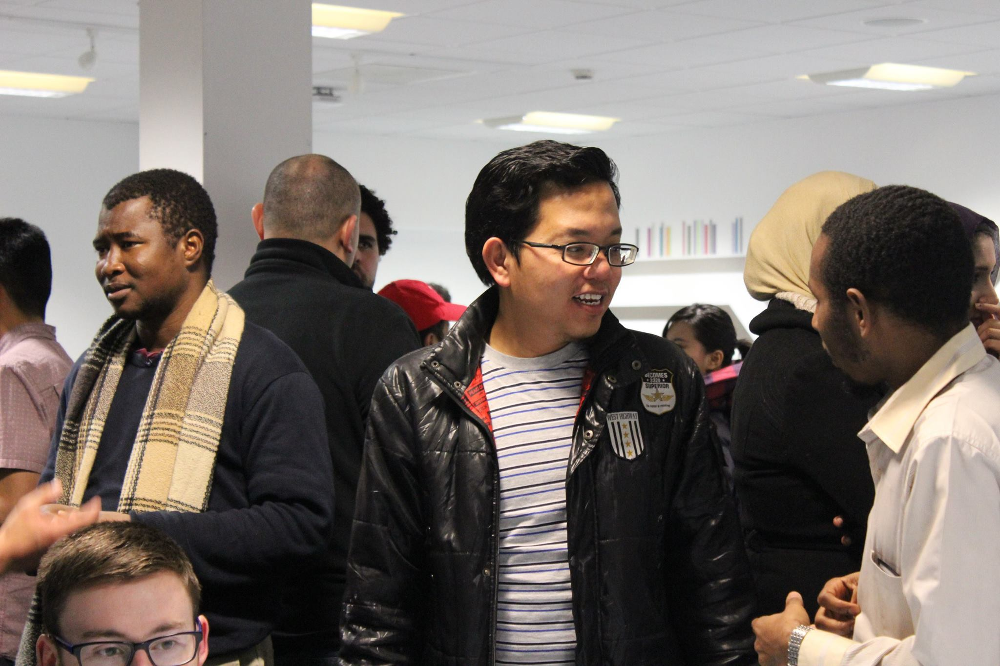
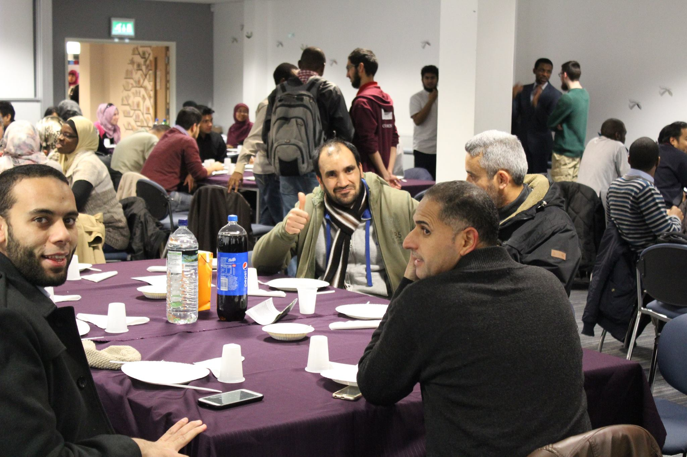
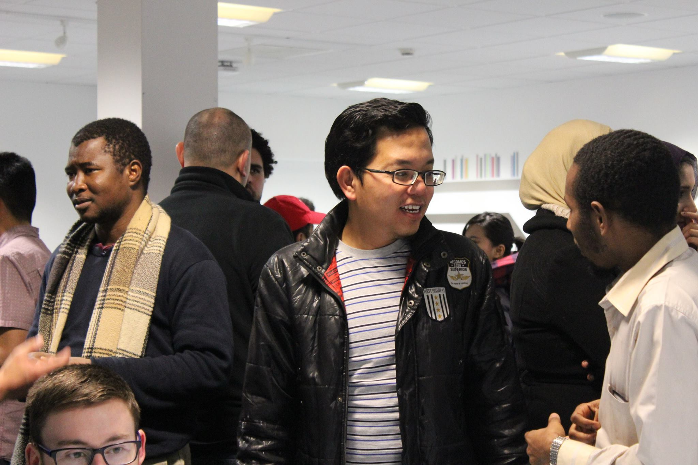
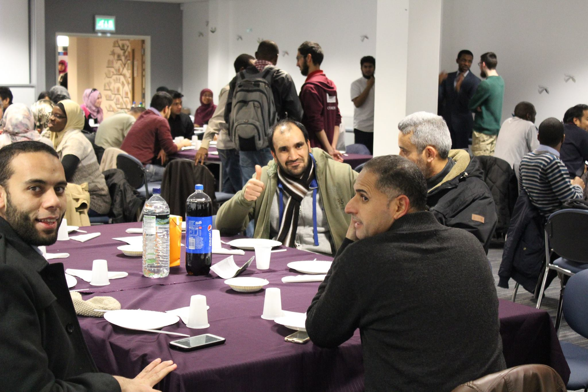

Postgraduates
Post Graduate students are a vital part of the Islamic Society community at the University of Birmingham. We’ve really jumped to the forefront in terms of Post Graduate Engagement over the last year with the introduction of our Post Graduate Officer role on our Committee and Post Graduate Specific Events.
We are looking to run even more events this year for Post Graduate including our very exciting Post Graduate Freshers Week events! Look out for them in the near future. If you have any ideas or questions, please contact our Post Graduate Officer: Sohail Hussain (post.grad@ubisoc.co.uk).
"The Islamic society in the University of Birmingham (UBISOC) have always strived to help the Muslims by providing them with the prayer facilities, iftaar and every support they can do for students, staff and the community in Birmingham."
Feras Alnaimat (Jordan) PhD Student, Mechanical Engineering
Specific events (2016/2017)
Postgraduate Dinner
We held a free Post Graduate Dinner in November last year. It was an extremely successful social event where around 70 Post Graduates came, socialised, networked and generally enjoyed themselves in a fun and lively atmosphere.
"It was a great event. I think for the first time in Birmingham I found myself within the folks I belong. So definitely that was an event to remember and hope ISOC come up with other such events in future"
Umer Karim (Pakistan) on the PG Dinner, PhD in Political Science

Gallery
Academic Skills Workshop
The Islamic Society hosted an Academic Skills Workshop in February 2017 focused on teaching Post Graduate (especially International Students) the UK Academic skills to enable them to best write their dissertations and essays. Hosted by Dr Hakeem Yusuf, a lecturer in Law at the University of Birmingham, it was a very informative event with around 40 attendees.
Post Graduate Quiz Night
A relaxed, light hearted social for Post Graduates who were looking for a break from their hectic degrees. Refreshments were provided.
Post Graduate Picnic
The Islamic Society collaborated with the Indonesian Community at the University of Birmingham to hold a Post Graduate Picnic in a local park to enjoy the brief spring sun.
Winter Dinner
An event specifically designed to cater for the many International Post Graduates who stayed behind during the winter break. The Islamic Society organised a free dinner to help Post Graduates who stayed at the University during the winter break to socialise and make new friends.
"It was quite nice, getting together with many brothers was a good opportunity to meet them. And families also have the chance to meet. The food was great. I had a delightful time. We continued to get together occasionally with some brothers after this night."
Cemal Atabas (Turkey) on the International Students Dinner, PhD in History
Prophet 'Isa (A.S.) Educational Day
An event organised in winter break where the Islamic Society collaborated with the Malaysian Community to host an educational event for children and teenagers to teach them about the life of Prophet 'Isa (A.S).


 


